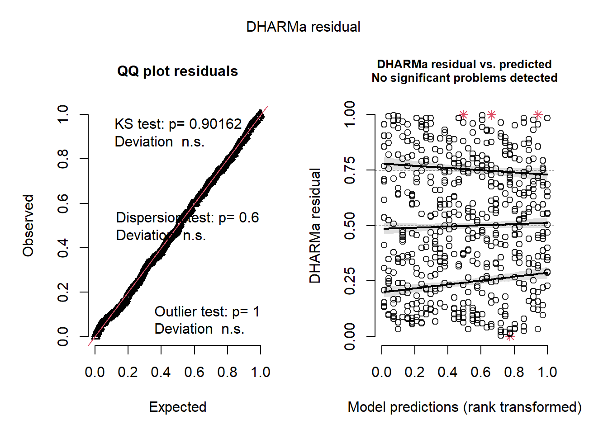
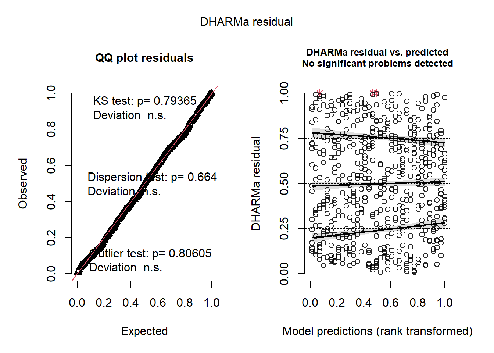
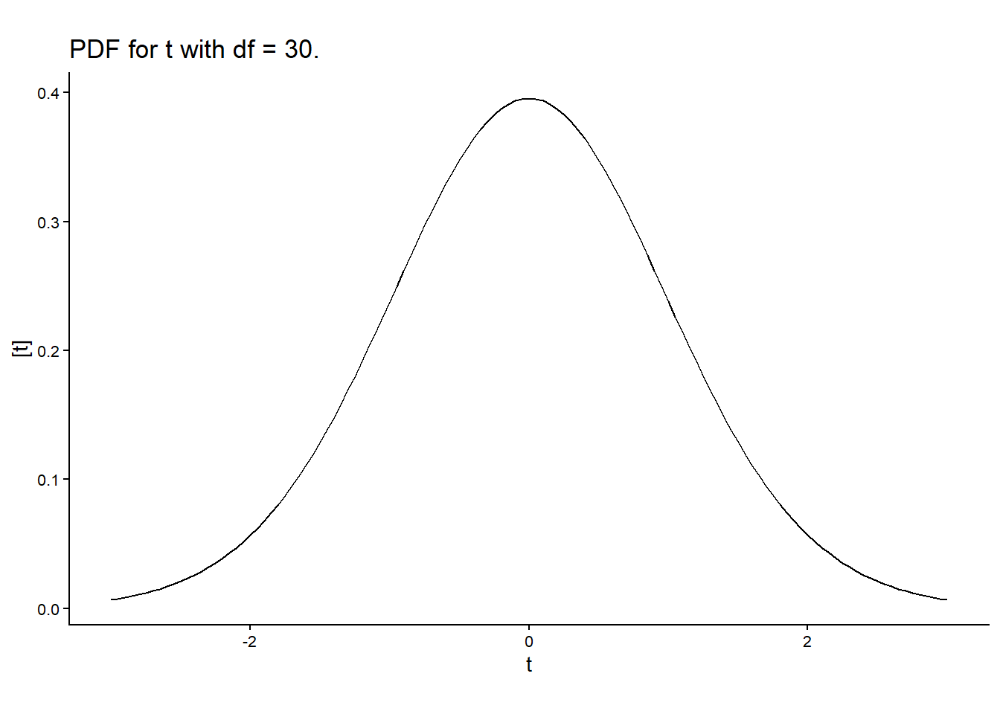
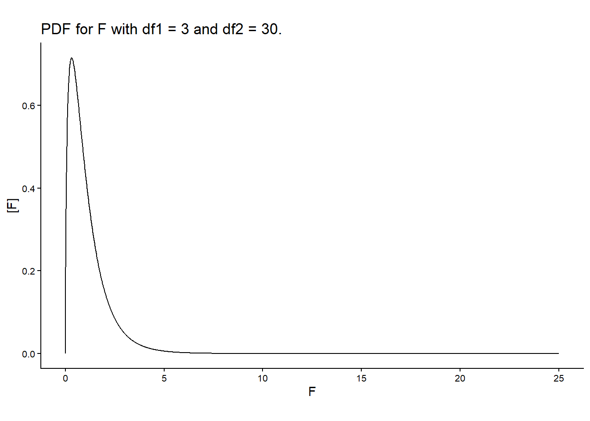

Day 11 Applied analysis of a repeated measures design, Inference
September 30th, 2026
11.1 Announcements
- Online classes on Oct 5, 7, 12, 14.
- Mixture of recordings and Zoom classes.
- Projects and homeworks are graded.
11.2 Repeated measures designs – practice
Applied example from last week (get code).
The model discussed in class can be described as
\[y_{ijk}=\mu_0 + D_i + T_j + (DT)_{ij} + r_k + u_{l(k)} + v_{m(lk)} + \varepsilon_{ijklm}, \\ u_{l(k)}\sim N(0, \sigma^2_u), \\ v_{m(lk)}\sim N(0, \sigma^2_v), \\ \varepsilon_{ijklm} \sim N(0, \sigma^2_\varepsilon),\]
where ….
# prepare data
url <- "https://raw.githubusercontent.com/stat870/fall2026/refs/heads/main/data/fecal_dm.csv"
dd_fecal <- read.csv(url)
dd_fecal$Pig <- as.factor(dd_fecal$Pig)
dd_fecal$Trt <- as.factor(dd_fecal$Trt)
dd_fecal$Room <- as.factor(dd_fecal$Room)
dd_fecal$Pen <- as.factor(dd_fecal$Pen)
dd_fecal$Day <- as.factor(dd_fecal$Day)
# AR(1) covariance structure
m_ar1 <- glmmTMB(Dry.matter...*10 ~
Trt*Day + Room + (1|Room:Pen) + ar1(Day + 0 |Room:Pen:Pig),
REML = TRUE,
control = glmmTMBControl(),
data = dd_fecal)
# Toep covariance structure
m_toep <- glmmTMB(Dry.matter.../10 ~
Trt*Day + Room + (1|Room:Pen) + toep(Day + 0 |Room:Pen:Pig),
REML = TRUE,
control = glmmTMBControl(),
data = dd_fecal)How do we know what covariance function was the best?

## Object of Class DHARMa with simulated residuals based on 250 simulations with refit = FALSE . See ?DHARMa::simulateResiduals for help.
##
## Scaled residual values: 0.676 0.736 0.112 0.684 0.824 0.82 0.272 0.76 0.8 0.652 0.356 0.292 0.672 0.416 0.356 0.328 0.888 0.292 0.024 0.648 ...
## Object of Class DHARMa with simulated residuals based on 250 simulations with refit = FALSE . See ?DHARMa::simulateResiduals for help.
##
## Scaled residual values: 0.688 0.736 0.104 0.664 0.82 0.808 0.356 0.76 0.748 0.628 0.38 0.304 0.68 0.456 0.408 0.332 0.872 0.304 0.048 0.612 ...## df AIC
## m_ar1 23 5954.007
## m_toep 26 1146.94511.3 Statistical inference review
11.3.1 Hypothesis tests
- Classic statistics have been deeply associated to falsifiability in the advancement of Science.
- Hugely influenced by Karl Popper, the advancement of Science can be understood as a string of hypotheses that are constantly evaluated.
- In statistics, hypothesis tests evaluate whether a given statistic (i.e., a function of the data) is too extreme for the null hypothesis to be true.
- Normally, the null hypothesis is business as usual, and we want to evaluate if we just made a scientific discovery, or if there’s not enough evidence to say that there’s something different going on.

Figure 11.1: Types of errors in hypothesis tests.
11.3.2 On p-values
- The p value is the probability of observing the [t/F] statistic under the null hypothesis.
- Often, we assume \(\alpha = 0.05\), and reject \(H_0\) if \(p<\alpha\).
- ASA’s statement on p-values
- Scientists rise up against statistical significance
- Discussion
- Counterargument: In defense of p-values
- Gelman “Let us have the serenity to embrace the variation that we cannot reduce, the courage to reduce the variation we cannot embrace, and the wisdom to distinguish one from the other.” [see talk]
11.3.3 t-tests

- Usually used to test whether one value/parameter/linear combination of parameters is different to a certain number.
- Steps:
- Define the target quantity \(\theta\). For example, \(\theta = \beta_1-\beta_2\).
- After observing the data, estimate \(\hat{\boldsymbol\beta}\) and \(se(\hat{\boldsymbol\beta})\).
- Calculate the test \(t\) statistic as \(t^\star = \frac{\hat\theta}{se(\hat\theta)}\).
- Compare \(t^{\star}\) to \(t_{1-\frac{\alpha}{2}, dfe}\).
- Why \(t\) distribution? \(N\) for known se, \(t\) for \(\hat{se}\).
- Note that \(t^\star\) depends on:
- sample size (\(dfe\))
- experiment design (other df)
- the variability \(\sigma^2\) associated to that system.
- Note that \(t_{crit}\) depends on \(dfe\).
11.3.4 F-tests are multivariate t-tests

- Test the relevance of multiple factors at once.
- Consistent with the “bins” concept of ANOVA.
- Usually used to test whether a group of factor is relevant to explain variability in the data.
- Why \(F\) distribution? Ratio between two independent \(\chi^2\) distributions divided by their df.
- Steps:
- Calculate Mean Squared Errors for the different sources of variability \(= \frac{SSH}{df}\).
- Calculate the F statistic as the ratio between mean squares, \(=\frac{MSH}{MSE}\).
- Compute \(P(F>F^\star)\), using the degrees of freedom of both mean squares, df of the numerator and df of the denominator.
- Note, again, the relationship between the p value and sample size and \(\sigma^2\).
- Note, again, that the \(P(F>F^\star)\) depends on the df of the denominator.